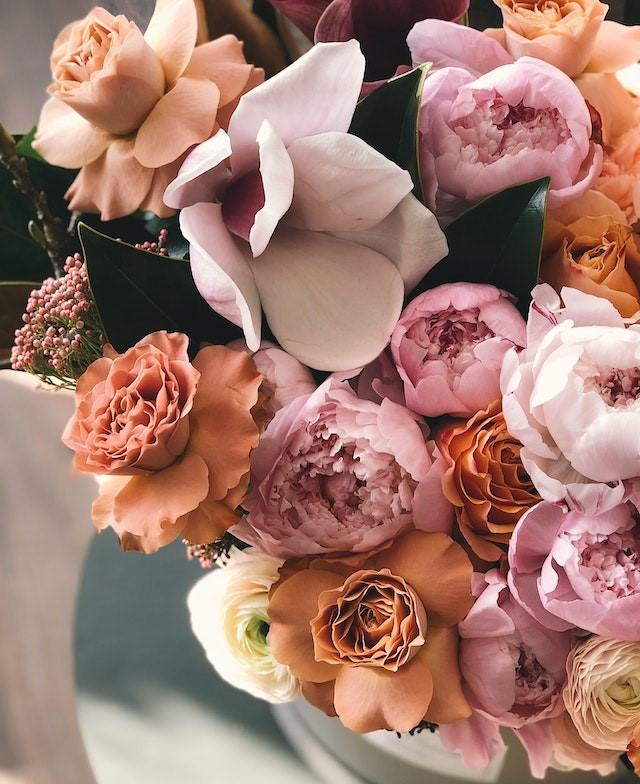
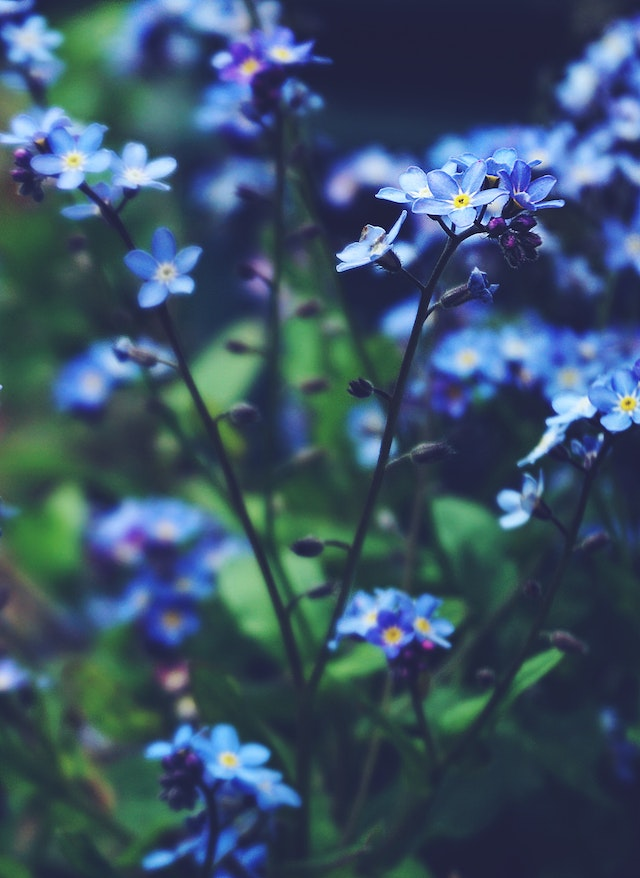
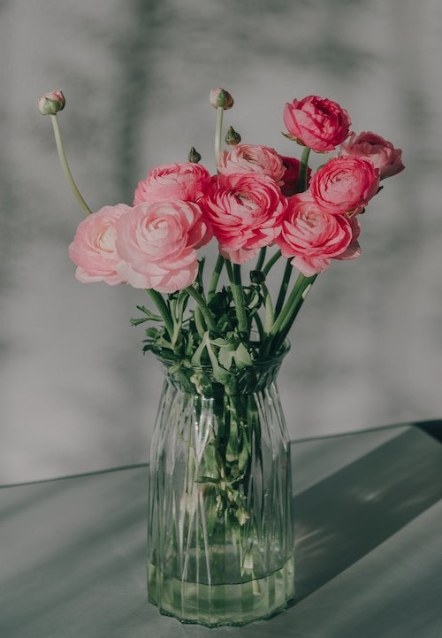
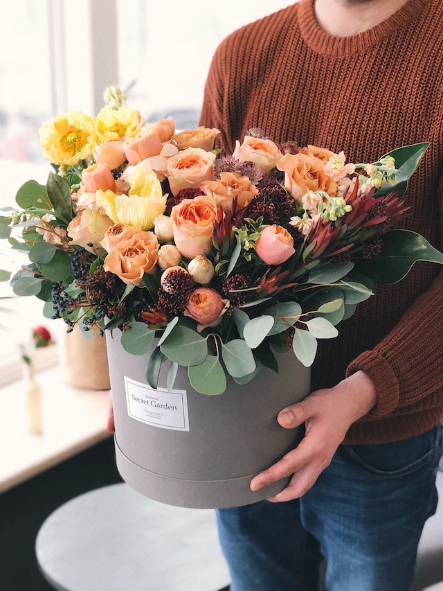

Garden flowers come in all colors, shapes, and sizes.
Whether you prefer popular blooms or want something unusual to add interest to your garden,
we have inspiration and advice for you. Every gardener can benefit from our tips to grow picture-perfect flowers.
This is the text for the main news box grid. Paint manufacturers analyze many aspects of society,
including global influences, fashion trends,
and real-time paint color sales data as they form their yearly color forecasts.
Garden flowers come in all colors, shapes, and sizes.
Whether you prefer popular blooms or want something unusual to add interest to your garden,
we have inspiration and advice for you. Every gardener can benefit from our tips to grow picture-perfect flowers.
News about blue flowers

Plants with blue flowers add a calm, cooling splash of color to your landscape.
Choose from these easy-care perennials, annuals, shrubs, vines, and bulbs that bloom in various shades of blue.
Read more!
News about pink flowers

Pink flowers can add a bold or a delicate touch to the garden.
It just depends on which pink shade you choose to use in your landscape.
Use light pink flowers for an airy feel or bright pink flowers that pop against a green background.
Browse our favorite pink flowering plants.
Read more!
The latest on bouquets

Pink flowers can add a bold or a delicate touch to the garden.
It just depends on which pink shade you choose to use in your landscape.
Use light pink flowers for an airy feel or bright pink flowers that pop against a green background.
Browse our favorite pink flowering plants.
Read more!